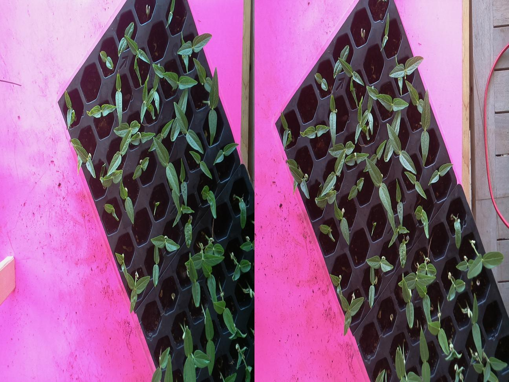
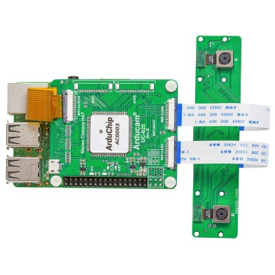
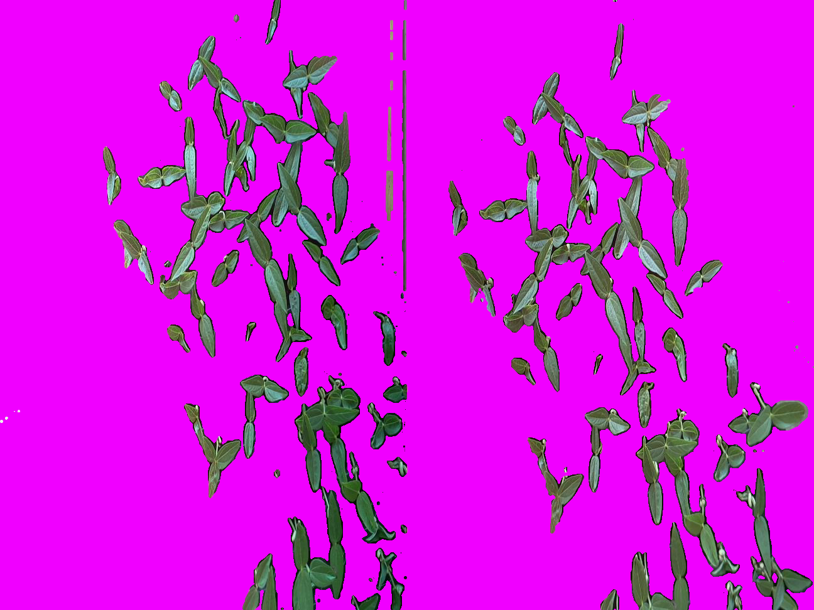
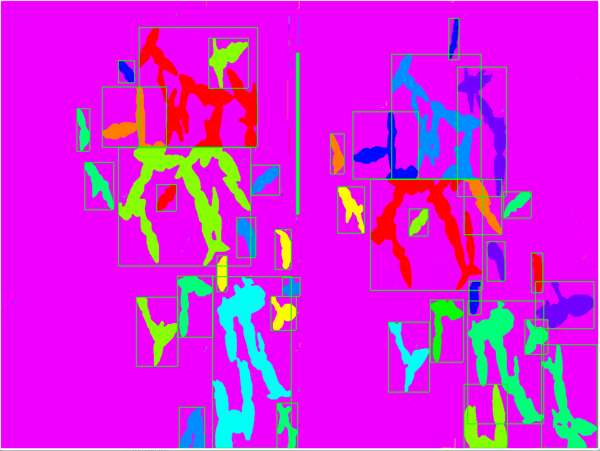

Isolating and Segmenting Images of Seedlings
Collecting the images
To collect sample images to train the neural network, I made a camera rig and placed trays of seedings under the camera. I moved and shifted the trays to collect as many images as possible from different viewpoints.
I used pink posterboard under the seedling trays because that is the easiest color to filter out.
Many images are needed to reliably train a neural network, so I spent many hours taking photos of seedlings.
The original image
The original image is taken from a stereoscopic camera, basically a fancy name for two cameras a fixed distance apart. For testing, the camera is screwed into a wood frame instead of mounted on the robot. It is read from a Raspberry Pi.
The camera is an Arducam 5MP Steroscopic Camera. I bought it from Uctronics.com for $89.
Thresholding
Next, to threshold the image to only keep the plants, all the green pixels should be kept. It is hard to do this with RGB since the proportion of green the green component is not really the "greenness" of the pixel. For example 0xFFFFFF has maximum green but is just white color. A better way is to convert the RGB to HSV (Hue, Saturation, Value).
Where RGB has RGB values from 0,0,0 to 255,255,255, HSV has values from 0,0,0 to 360,255,255. The first value is Hue which is an angle where 0 is Red, 120 is Green, 240 is Blue, then 360 is Red again, S is saturation where 0 is gray and 255 is fully colored, then V is Value where 0 is black and 255 is bright.
Converting RBG to HSV is simple, I just copied the algorithm from Wikipedia.

Then all the program needs to do is look at the Hue to determine if it is green, aka if H is around 120 out of 360, and make sure the value and saturation are moderate so it isn't black or white.
For the few outlier pixels the bitmask from the thresholding can be ballooned a little bit. Here I did 5 iteratsions of any pixel that has 3 or more neightbors included in the masks are also included. This smooths out the edges and fills in any small holes
The final result of thresholding the above image is:
Segmenting
Segmenting is very easy to program. Starting from the bitmask from thresholding just find the first pixel not already segmented, then recursevly flood the region witha unique value from all the other regions untill done.
The problem is most of the plants in the image overlap with eachother from the camera's angle making huge blobs. A not that good but easy way to cut those up is to cut along the line that splits the number of pixels in half along the longer side. This sometimes causes new regions to cut off which can then be re-flooded. It isn't perfect but probably good enough.
Since each region is flooded with a unique value, it is easy to see how many pixels a region has, and the top left and bottom right corners are. So then it is easy to fill in worthless tiny regions with only a couple pixels or with wierd shapes that probably aren't plants.
The final result from segmenting is:
Each "box" of colored pixels is separated and isolated, and used as a mask to select pixels from the original photo to be used as a training image for the neural network.